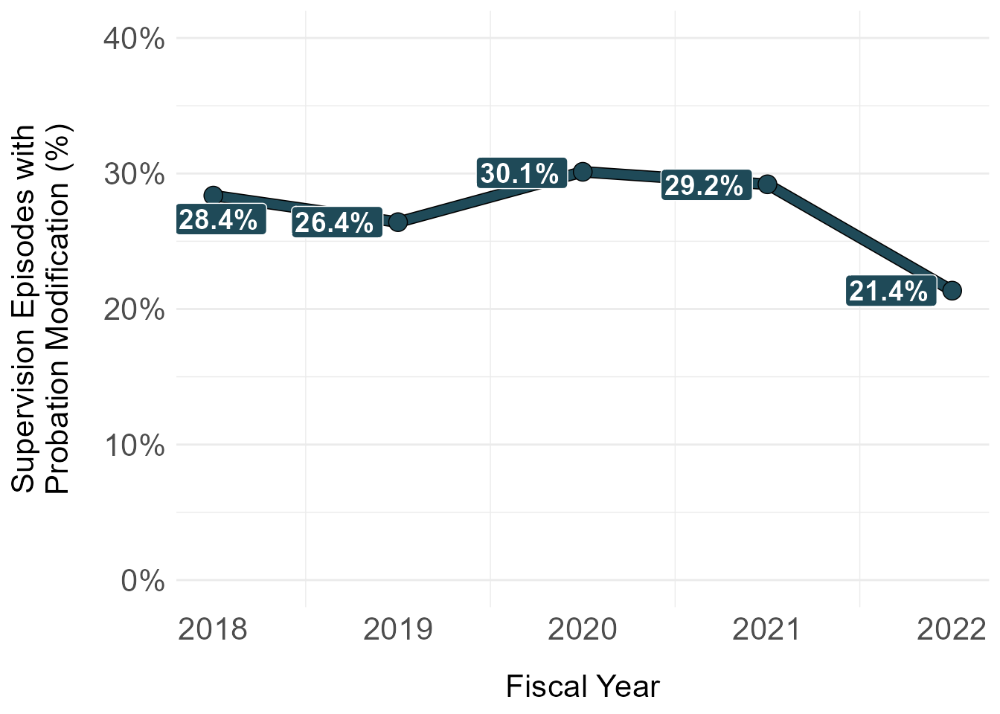
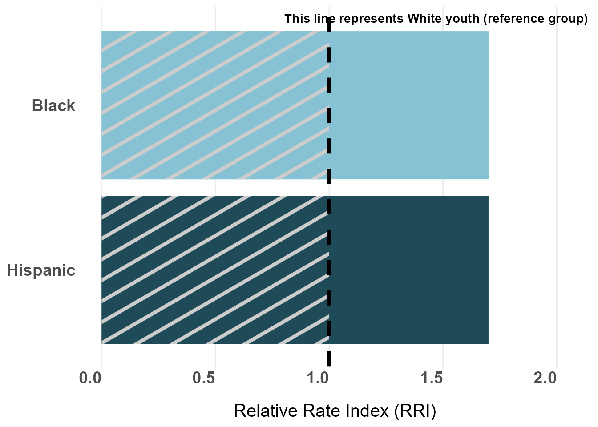
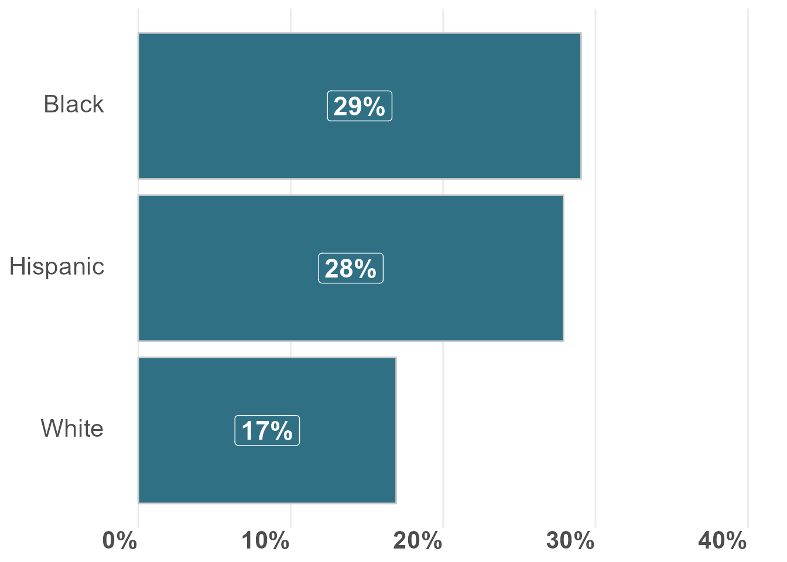
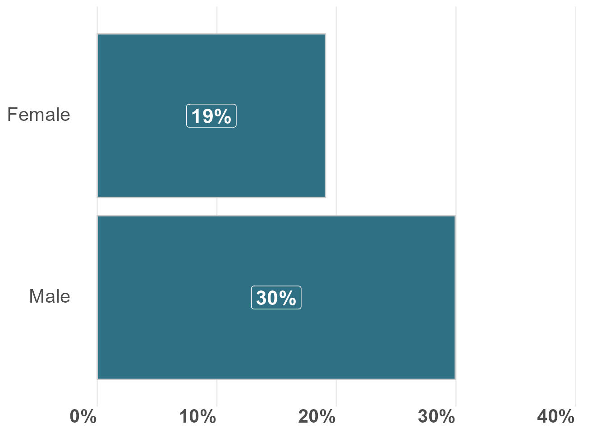
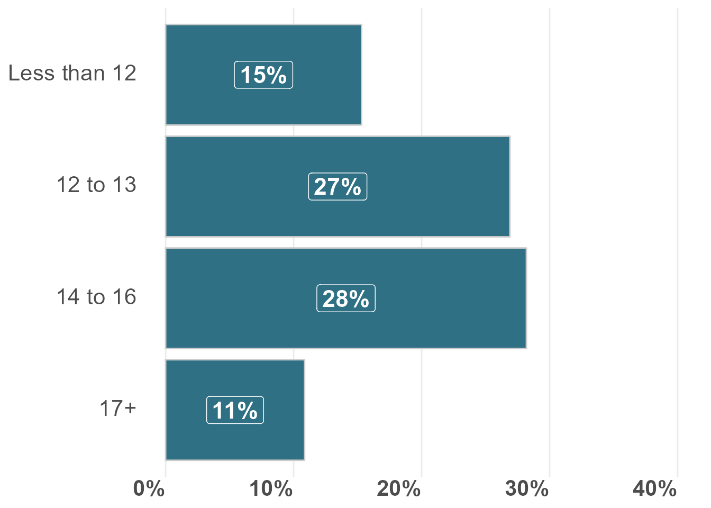
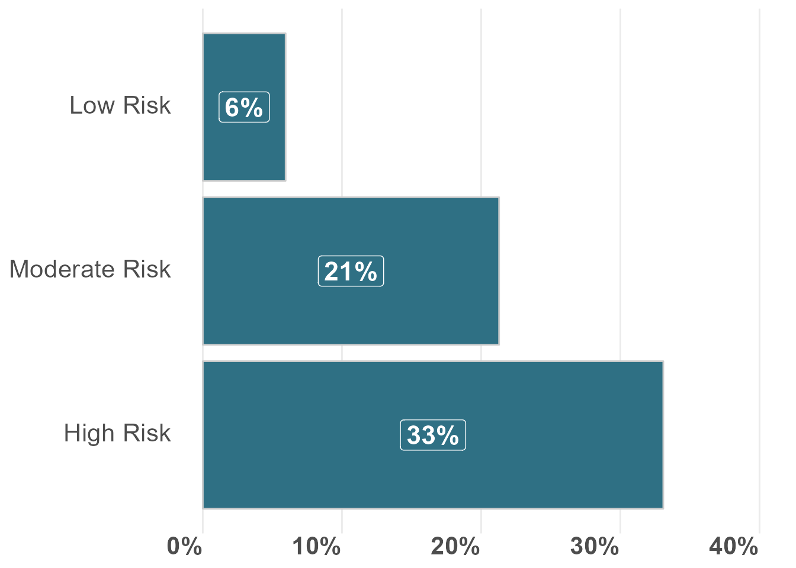
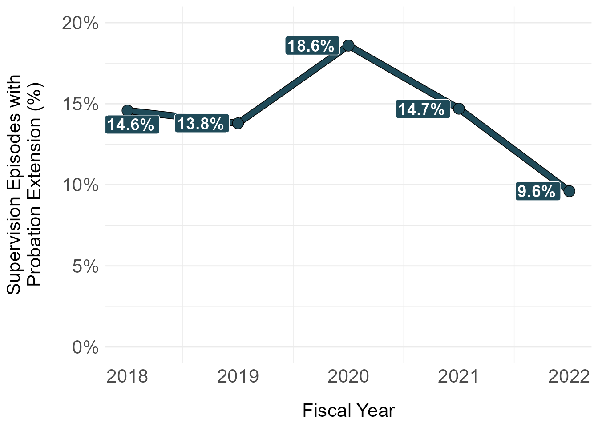
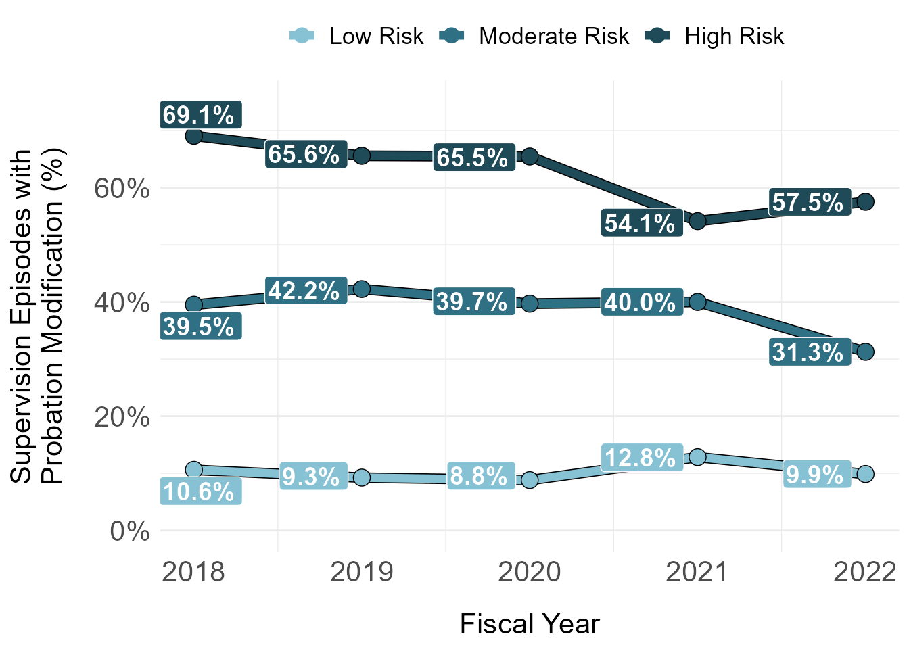
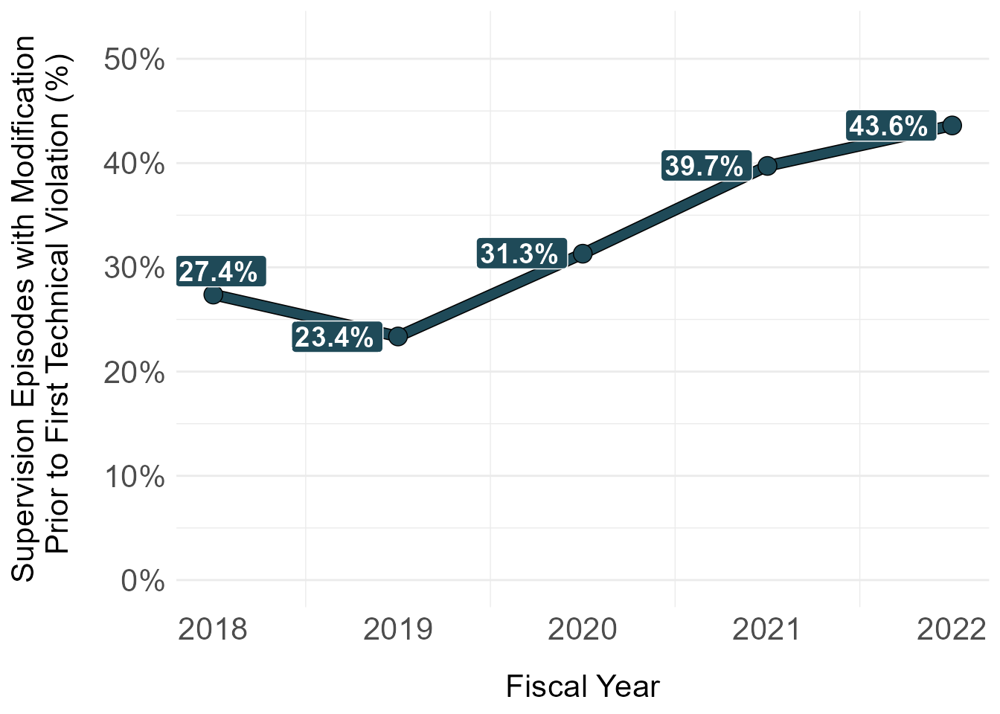

| FY of Completion | Unique Youth (N) | Unique Referrals (N) | Unique Supervision Episodes (N) | Supervision Episodes, Percent of Sample (column %) | Supervision Episodes, with at least one level modification (row %) | Supervision Episodes, with at least one supervision extension (row %) |
|---|---|---|---|---|---|---|
| 2018 | 1,866 | 1,900 | 1,900 | 25.3% | 28.4% | 14.6% |
| 2019 | 1,830 | 1,863 | 1,863 | 24.8% | 26.4% | 13.8% |
| 2020 | 1,641 | 1,673 | 1,673 | 22.3% | 30.1% | 18.6% |
| 2021 | 1,025 | 1,041 | 1,041 | 13.9% | 29.2% | 14.7% |
| 2022 | 1,148 | 1,166 | 1,166 | 15.5% | 21.4% | 9.6% |
| Overall | 6,757 | 7,513 | 7,513 | 100.0% | 27.2% | 14.7% |
How are modifications used?
How are modifications used?
What is the average number of modifications per supervision episode? How does this vary across race/ethnicity, sex, and risk level?
What is the average number of modifications for youth who receive a technical violation? How does this vary across race/ethnicity, sex, and risk level?
Modifications Overview
NOTE: All analysis of supervision level modifications (e.g., supervision episodes with at least one supervision level modification) refer to instances where a supervision phase/level is modified to a more intensive level of supervision.
Table 1. By FY: Percentage of Supervision Episodes/Referrals with a Supervision Modification and Extension
slide 23a

Table 2. By Race/Ethnicity: Percentage of Supervision Episodes/Referrals with a Supervision Modification and Extension
| Race/Ethnicity | Unique Youth (N) | Unique Referrals (N) | Unique Supervision Episodes (N) | Supervision Episodes, Percent of Sample (column %) | Supervision Episodes, with at least one level modification (row %) | Supervision Episodes, with at least one supervision extension (row %) |
|---|---|---|---|---|---|---|
| Asian | 62 | 68 | 68 | 0.9% | 7.4% | 8.8% |
| Black | 2,962 | 3,328 | 3,328 | 44.3% | 29.1% | 15.6% |
| Hispanic | 3,049 | 3,394 | 3,394 | 45.2% | 27.9% | 15.0% |
| Other | 8 | 8 | 8 | 0.1% | 50.0% | 37.5% |
| White | 676 | 715 | 715 | 9.5% | 16.9% | 9.9% |
| Overall | 6,757 | 7,513 | 7,513 | 100.0% | 27.2% | 14.7% |
### unique youth, referrals, and supervision episodes
df_modifications_extensions_race_rri <- df_dallas_county_av_supervision_analytic_file %>%
dplyr::group_by(race_clean) %>%
dplyr::summarise(`Unique Youth (N)` = n_distinct(unique_id),
`Unique Referrals (N)` = n_distinct(unique_referral_id),
`Unique Supervision Episodes (N)` = n_distinct(unique_referral_id),
`Supervision Episodes, Percent of Sample (column %)` = scales::percent(`Unique Supervision Episodes (N)`/unique_supervision_episode_denom,
accuracy = .1),
`Supervision Episodes, with at least one level modification` = n_distinct(unique_referral_id[supervision_level_increases_per_supervision_episode_count>0])/`Unique Supervision Episodes (N)`,
`Supervision Episodes, with at least one level modification (RRI to White youth)` = round((n_distinct(unique_referral_id[supervision_level_increases_per_supervision_episode_count>0])/`Unique Supervision Episodes (N)`)/0.16666667, digits = 1),
`Supervision Episodes, with at least one supervision extension` = n_distinct(unique_referral_id[unique_supervision_extensions_per_supervision_count>0])/`Unique Supervision Episodes (N)`,
`Supervision Episodes, with at least one supervision extension (RRI to White youth)` = round((n_distinct(unique_referral_id[unique_supervision_extensions_per_supervision_count>0])/`Unique Supervision Episodes (N)`)/0.09779614, digits = 1)) %>%
ungroup() %>%
dplyr::rename(`Race/Ethnicity` = race_clean)ungroup: no grouping variables### remove groups analysis with small sample size
### pull out RRIs for plot
### use gather to shift data from wide to long
df_modifications_extensions_race_rri_viz <- df_modifications_extensions_race_rri %>%
filter(`Race/Ethnicity`%in%c("Black",
"Hispanic",
"White")) %>%
dplyr::select(`Race/Ethnicity`,rri=`Supervision Episodes, with at least one level modification (RRI to White youth)`) %>%
dplyr::filter(`Race/Ethnicity`!="White") %>%
mutate(reference = 1)filter: removed 2 rows (40%), 3 rows remainingmutate: new variable 'reference' (double) with one unique value and 0% NA### plot
ggplot(data = df_modifications_extensions_race_rri_viz,
aes(y = rri,
x = `Race/Ethnicity`,
fill = forcats::fct_rev(`Race/Ethnicity`))) +
geom_bar(stat = "identity",
position = "dodge"
# ,color = "gray80"
) +
# geom_bar(aes(y=reference),
# stat = "identity",
# position = "dodge",
# fill = "gray80") +
geom_col_pattern(aes(y=reference),
pattern_color = NA,
pattern_fill = "gray80",
pattern = "stripe"
# ,color = "gray80"
) +
geom_abline(slope=0,
intercept=1,
col = "#000000",
size = 1.5,
linetype="dashed") +
scale_x_discrete(limits = rev) +
scale_y_continuous(limits=c(min(0),
max(2.05))) +
scale_fill_manual(values = c("#1F4A58","#87C2D4")) +
scale_color_manual(values = rev(c("#1F4A58","#87C2D4"))) +
theme(legend.position = "top",
legend.title.align=0.5,
# axis.text.y = element_text(face = "bold", hjust = 1, size = 14),
# strip.text.x = element_text(face = "bold", vjust = 1.5, size = 14,
# hjust = 0.5),
axis.text.y = element_text(face = "bold",size = 14),
axis.text.x = element_text(face = "bold", hjust = 1, size = 14),
plot.caption = element_text(hjust = 0.5),
axis.ticks.length = unit(0, "cm"),
panel.grid.major.y = element_blank(),
# panel.grid.major.x = element_blank(),
panel.grid.minor = element_blank(),
axis.title.x = element_text(size = 15, margin = margin(t = 15)),
axis.title.y = element_text(size =15, margin = margin(r = 15))) +
labs(y = "Relative Rate Index (RRI)",
x = NULL,
caption = NULL,
title = NULL,
subtitle = NULL,
fill = NULL) +
coord_flip() +
# facet_grid(~ rri_measure) +
# guides(fill = guide_legend(reverse = TRUE,
# title.position = "top",
# label.position = "bottom",
# keywidth = 3,
# nrow = 1)) +
guides(fill = FALSE) +
# geom_label_repel(aes(label = format(round(as.numeric(rri),
# digits = 1),
# nsmall=1),
# group = forcats::fct_rev(`Race/Ethnicity`),
# color = `Race/Ethnicity`),
# position = position_dodge(.9),
# direction = 'x',
# hjust = 0.75,
# label.padding = 0.3,
# box.padding = 0.15,
# size = 5,
# fill = "white",
# fontface = "bold",
# na.rm = TRUE,
# show.legend = FALSE) +
annotate("text",
x = 2.53,
y = 1.47,
label = "This line represents White youth (reference group)",
colour = "#000000",
size = 3.75,
fontface = 2)Warning: The `<scale>` argument of `guides()` cannot be `FALSE`. Use "none" instead as
of ggplot2 3.3.4.
### write out
ggsave(
filename = file.path(sp_viz_output_path, "slide_24_modification_rate_race_eth_rri.png"),
plot = last_plot(),
device = ragg::agg_png,
dpi = 300,
height = 5.25,
width = 10,
units = "in",
bg = "transparent"
)
Table 3. By Gender: Percentage of Supervision Episodes/Referrals with a Supervision Modification and Extension
| Gender | Unique Youth (N) | Unique Referrals (N) | Unique Supervision Episodes (N) | Supervision Episodes, Percent of Sample (column %) | Supervision Episodes, with at least one level modification (row %) | Supervision Episodes, with at least one supervision extension (row %) |
|---|---|---|---|---|---|---|
| Female | 1,770 | 1,896 | 1,896 | 25.2% | 19.1% | 9.3% |
| Male | 4,987 | 5,617 | 5,617 | 74.8% | 29.9% | 16.5% |
| Overall | 6,757 | 7,513 | 7,513 | 100.0% | 27.2% | 14.7% |

Table 4. By Age: Percentage of Supervision Episodes/Referrals with a Supervision Modification and Extension
| Age | Unique Youth (N) | Unique Referrals (N) | Unique Supervision Episodes (N) | Supervision Episodes, Percent of Sample (column %) | Supervision Episodes, with at least one level modification (row %) | Supervision Episodes, with at least one supervision extension (row %) |
|---|---|---|---|---|---|---|
| Less than 12 | 196 | 196 | 196 | 2.6% | 15.3% | 14.3% |
| 12 to 13 | 1,322 | 1,372 | 1,372 | 18.3% | 26.9% | 16.0% |
| 14 to 16 | 5,289 | 5,769 | 5,769 | 76.8% | 28.2% | 14.8% |
| 17+ | 175 | 175 | 175 | 2.3% | 10.9% | 2.9% |
| Overall | 6,756 | 7,512 | 7,512 | 100.0% | 27.2% | 14.7% |

Table 5. By Risk Level: Percentage of Supervision Episodes/Referrals with a Supervision Modification and Extension
Note: This is the “listed risk level at the time of referral disposition”
| Risk Level | Unique Youth (N) | Unique Referrals (N) | Unique Supervision Episodes (N) | Supervision Episodes, Percent of Sample (column %) | Supervision Episodes, with at least one level modification (row %) | Supervision Episodes, with at least one supervision extension (row %) |
|---|---|---|---|---|---|---|
| Low Risk | 3,648 | 3,747 | 3,747 | 49.9% | 9.8% | 6.0% |
| Moderate Risk | 2,253 | 2,386 | 2,386 | 31.8% | 39.3% | 21.3% |
| High Risk | 992 | 1,091 | 1,091 | 14.5% | 63.3% | 33.1% |
| Unknown/Not Administered | 286 | 289 | 289 | 3.8% | 15.9% | 4.5% |
| Overall | 6,757 | 7,513 | 7,513 | 100.0% | 27.2% | 14.7% |
slide 25

slide 23a

slide 23b

Table 6. By Needs Level: Percentage of Supervision Episodes/Referrals with a Supervision Modification and Extension
Note: This is the “listed needs level at the time of referral disposition”
| Needs Level | Unique Youth (N) | Unique Referrals (N) | Unique Supervision Episodes (N) | Supervision Episodes, Percent of Sample (column %) | Supervision Episodes, with at least one level modification (row %) | Supervision Episodes, with at least one supervision extension (row %) |
|---|---|---|---|---|---|---|
| Low Needs | 2,578 | 2,645 | 2,645 | 35.2% | 7.4% | 3.8% |
| Moderate Needs | 2,588 | 2,724 | 2,724 | 36.3% | 27.8% | 15.2% |
| High Needs | 1,689 | 1,836 | 1,836 | 24.4% | 56.5% | 31.3% |
| Unknown/Not Administered | 305 | 308 | 308 | 4.1% | 16.9% | 5.2% |
| Overall | 6,757 | 7,513 | 7,513 | 100.0% | 27.2% | 14.7% |
Average Number of Modifications
Note: This current analysis does not account for the timing of modifications or extensions relative to technical violations
Table 7. By FY: Average Number of Supervision Modifications and Extensions per Supervision Episode
| FY of Completion | Unique Supervision Episodes (N) | Mean Number of Supervision Level Modifications | Median Number of Supervision Level Modifications | Min Number of Supervision Level Modifications | Max Number of Supervision Level Modifications | Mean Number of Supervision Extensions | Median Number of Supervision Extensions | Min Number of Supervision Extensions | Max Number of Supervision Extensions |
|---|---|---|---|---|---|---|---|---|---|
| 2018 | 1,900 | 0.6131579 | 0 | 0 | 9 | 0.2236842 | 0 | 0 | 6 |
| 2019 | 1,816 | 0.5424009 | 0 | 0 | 11 | 0.2042952 | 0 | 0 | 6 |
| 2020 | 1,631 | 0.6247701 | 0 | 0 | 10 | 0.2526058 | 0 | 0 | 5 |
| 2021 | 1,020 | 0.5617647 | 0 | 0 | 7 | 0.1941176 | 0 | 0 | 4 |
| 2022 | 1,146 | 0.4083770 | 0 | 0 | 9 | 0.1308901 | 0 | 0 | 5 |
| Overall | 7,513 | 0.5603620 | 0 | 0 | 11 | 0.2071077 | 0 | 0 | 6 |
Table 8. By Race/Ethnicity: Average Number of Supervision Modifications and Extensions per Supervision Episode
| Race/Ethnicity | Unique Supervision Episodes (N) | Mean Number of Supervision Level Modifications | Median Number of Supervision Level Modifications | Min Number of Supervision Level Modifications | Max Number of Supervision Level Modifications | Mean Number of Supervision Extensions | Median Number of Supervision Extensions | Min Number of Supervision Extensions | Max Number of Supervision Extensions |
|---|---|---|---|---|---|---|---|---|---|
| Asian | 68 | 0.1029412 | 0.0 | 0 | 2 | 0.0735294 | 0 | 0 | 1 |
| Black | 3,328 | 0.5901442 | 0.0 | 0 | 11 | 0.2262620 | 0 | 0 | 6 |
| Hispanic | 3,394 | 0.5816146 | 0.0 | 0 | 8 | 0.2030053 | 0 | 0 | 5 |
| Other | 8 | 0.8750000 | 0.5 | 0 | 3 | 0.2500000 | 0 | 0 | 1 |
| White | 715 | 0.3608392 | 0.0 | 0 | 10 | 0.1496503 | 0 | 0 | 6 |
| Overall | 7,513 | 0.5603620 | 0.0 | 0 | 11 | 0.2071077 | 0 | 0 | 6 |
Table 9. By Gender: Average Number of Supervision Modifications and Extensions per Supervision Episode
| Gender | Unique Supervision Episodes (N) | Mean Number of Supervision Level Modifications | Median Number of Supervision Level Modifications | Min Number of Supervision Level Modifications | Max Number of Supervision Level Modifications | Mean Number of Supervision Extensions | Median Number of Supervision Extensions | Min Number of Supervision Extensions | Max Number of Supervision Extensions |
|---|---|---|---|---|---|---|---|---|---|
| Female | 1,896 | 0.3802743 | 0 | 0 | 9 | 0.1397679 | 0 | 0 | 6 |
| Male | 5,617 | 0.6211501 | 0 | 0 | 11 | 0.2298380 | 0 | 0 | 6 |
| Overall | 7,513 | 0.5603620 | 0 | 0 | 11 | 0.2071077 | 0 | 0 | 6 |
Table 10. By Age: Average Number of Supervision Modifications and Extensions per Supervision Episode
| Age | Unique Supervision Episodes (N) | Mean Number of Supervision Level Modifications | Median Number of Supervision Level Modifications | Min Number of Supervision Level Modifications | Max Number of Supervision Level Modifications | Mean Number of Supervision Extensions | Median Number of Supervision Extensions | Min Number of Supervision Extensions | Max Number of Supervision Extensions |
|---|---|---|---|---|---|---|---|---|---|
| Less than 12 | 196 | 0.4336735 | 0 | 0 | 7 | 0.2448980 | 0 | 0 | 4 |
| 12 to 13 | 1,372 | 0.6844023 | 0 | 0 | 11 | 0.2791545 | 0 | 0 | 6 |
| 14 to 16 | 5,769 | 0.5486219 | 0 | 0 | 10 | 0.1943144 | 0 | 0 | 5 |
| 17+ | 175 | 0.1200000 | 0 | 0 | 2 | 0.0228571 | 0 | 0 | 1 |
| Overall | 7,512 | 0.5604366 | 0 | 0 | 11 | 0.2071353 | 0 | 0 | 6 |
Table 11. By Risk Level: Average Number of Supervision Modifications and Extensions per Supervision Episode
| Risk Level | Unique Supervision Episodes (N) | Mean Number of Supervision Level Modifications | Median Number of Supervision Level Modifications | Min Number of Supervision Level Modifications | Max Number of Supervision Level Modifications | Mean Number of Supervision Extensions | Median Number of Supervision Extensions | Min Number of Supervision Extensions | Max Number of Supervision Extensions |
|---|---|---|---|---|---|---|---|---|---|
| Low Risk | 3,747 | 0.1681345 | 0 | 0 | 7 | 0.0720576 | 0 | 0 | 4 |
| Moderate Risk | 2,386 | 0.8206203 | 0 | 0 | 9 | 0.3046940 | 0 | 0 | 6 |
| High Risk | 1,091 | 1.4142988 | 1 | 0 | 11 | 0.4995417 | 0 | 0 | 6 |
| Unknown/Not Administered | 289 | 0.2733564 | 0 | 0 | 6 | 0.0484429 | 0 | 0 | 3 |
| Overall | 7,513 | 0.5603620 | 0 | 0 | 11 | 0.2071077 | 0 | 0 | 6 |
Table 11b. By Risk Level: Average Number of Supervision Modifications and Extensions per Supervision Episode
| Risk Level | Unique Supervision Episodes (N) | Mean Overall LOS | Median Overall LOS | min Overall LOS | max Overall LOS |
|---|---|---|---|---|---|
| Low Risk | 3,747 | 245.7579 | 182 | 0 | 2,115 |
| Moderate Risk | 2,386 | 357.1032 | 275 | 0 | 2,152 |
| High Risk | 1,091 | 449.0385 | 364 | 16 | 1,620 |
| Unknown/Not Administered | 289 | 223.5938 | 180 | 6 | 1,185 |
Table 12. By Needs Level: Average Number of Supervision Modifications and Extensions per Supervision Episode
| Needs Level | Unique Supervision Episodes (N) | Mean Number of Supervision Level Modifications | Median Number of Supervision Level Modifications | Min Number of Supervision Level Modifications | Max Number of Supervision Level Modifications | Mean Number of Supervision Extensions | Median Number of Supervision Extensions | Min Number of Supervision Extensions | Max Number of Supervision Extensions |
|---|---|---|---|---|---|---|---|---|---|
| Low Needs | 2,645 | 0.1137996 | 0 | 0 | 7 | 0.0442344 | 0 | 0 | 4 |
| Moderate Needs | 2,724 | 0.5686490 | 0 | 0 | 8 | 0.2099853 | 0 | 0 | 4 |
| High Needs | 1,836 | 1.2363834 | 1 | 0 | 11 | 0.4624183 | 0 | 0 | 6 |
| Unknown/Not Administered | 308 | 0.2922078 | 0 | 0 | 6 | 0.0584416 | 0 | 0 | 3 |
| Overall | 7,513 | 0.5603620 | 0 | 0 | 11 | 0.2071077 | 0 | 0 | 6 |
% of Episodes with Supervision Modifications Prior to First Technical Violation
NOTE: The following tables are limited to youth with a technical violation. The current analysis includes any upward modification of supervision level intensiveness (moving to a more intensive supervision level) that occurs prior to the first date of violation AND that is not linked to a new offense violation (definition of linked is that the modification occurs between 1 day prior to violation disposition or up to 3 days following violation disposition). Further, I only considered modifications that occurred two or more days prior to the filing date of the first technical violation for a given supervision episode as having occurred before a violation (and as likely unrelated to the violation).
Table 13. By FY: % of Episodes with Supervision Modifications Prior to First Technical Violation
| FY of Completion | Supervision Episodes w/ Technical Violation (N) | Supervision Episodes, with at least one level modification prior to Technical (row %) |
|---|---|---|
| 2018 | 325 | 27.4% |
| 2019 | 291 | 23.4% |
| 2020 | 329 | 31.3% |
| 2021 | 146 | 39.7% |
| 2022 | 133 | 43.6% |
| Overall | 1,224 | 30.7% |
slide 23a

Table 14. By Race/Ethnicity: % of Episodes with Supervision Modifications Prior to First Technical Violation
| Race/Ethnicity | Supervision Episodes w/ Technical Violation (N) | Supervision Episodes, with at least one level modification prior to Technical (row %) |
|---|---|---|
| Asian | 3 | 33.3% |
| Black | 549 | 35.2% |
| Hispanic | 591 | 27.7% |
| Other | 3 | 0.0% |
| White | 78 | 23.1% |
| Overall | 1,224 | 30.7% |
Table 15. By Gender: % of Episodes with Supervision Modifications Prior to First Technical Violation
| Gender | Supervision Episodes w/ Technical Violation (N) | Supervision Episodes, with at least one level modification prior to Technical (row %) |
|---|---|---|
| Female | 210 | 29.0% |
| Male | 1,014 | 31.1% |
| Overall | 1,224 | 30.7% |
Table 16. By Age: % of Episodes with Supervision Modifications Prior to First Technical Violation
| Age | Supervision Episodes w/ Technical Violation (N) | Supervision Episodes, with at least one level modification prior to Technical (row %) |
|---|---|---|
| Less than 12 | 19 | 15.8% |
| 12 to 13 | 205 | 27.3% |
| 14 to 16 | 982 | 31.7% |
| 17+ | 18 | 33.3% |
| Overall | 1,224 | 30.7% |
Table 17. By Risk Level: % of Episodes with Supervision Modifications Prior to First Technical Violation
| Risk Level | Supervision Episodes w/ Technical Violation (N) | Supervision Episodes, with at least one level modification prior to Technical (row %) |
|---|---|---|
| Low Risk | 188 | 11.2% |
| Moderate Risk | 589 | 27.8% |
| High Risk | 427 | 42.6% |
| Unknown/Not Administered | 20 | 45.0% |
| Overall | 1,224 | 30.7% |
Table 18. By Needs Level: % of Episodes with Supervision Modifications Prior to First Technical Violation
| Needs Level | Supervision Episodes w/ Technical Violation (N) | Supervision Episodes, with at least one level modification prior to Technical (row %) |
|---|---|---|
| Low Needs | 89 | 21.3% |
| Moderate Needs | 454 | 25.1% |
| High Needs | 658 | 35.4% |
| Unknown/Not Administered | 23 | 43.5% |
| Overall | 1,224 | 30.7% |